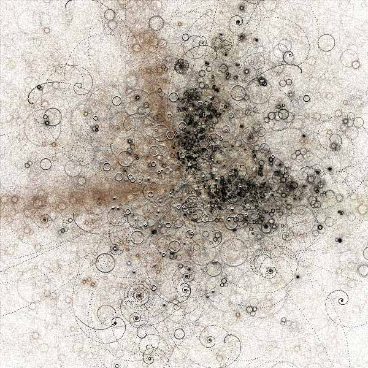
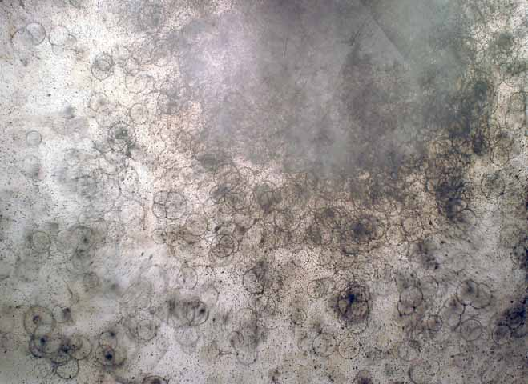
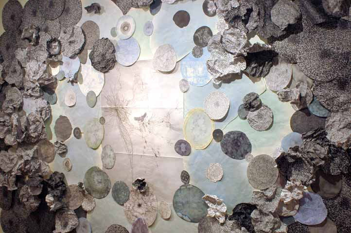
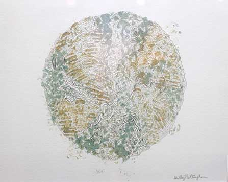

Austin Art Review: Troy Allen, Clayton Armstrong, Shelley Nottingham, Making it Better
by phil on Sunday Oct 14, 2007 11:42 PM
art criticism
October 6 - November 10, 1007
Else Madsen Gallery
411 Brazos Street, Suite 99
Austin, Texas 78701
Rating: 7.1
Are humans just elaborate machines? This is one of many questions that come to mind when viewing Making it Better at Else Madsen.
Before showing works from the three artists on display at Else Madsen, I want to reference one of my favorite examples of generative art, UNIV44 from Bubble Chamber by J. Tarbell:

Looking at this artwork immediately reveals how the art was created: the artist wrote a series of instructions and then told a computer to carry it out over a number of repetitions.
The three artists in Making it Better take a slightly different approach and don't let computers interfere. Rather, they allow themselves to be used as computers and be the vehicles for their own algorithms.
Here is Clayton Armstrong's strikingly similar Opera:

Sennelier ink, alcohol, water, soap on Rieves BFK, Feb. 2007 ($500)
And here are works from Troy A. Allen and Shelley N. Nottingham.

Troy A. Allen, Cambrian Era, Print and drawing collage, 2007

Shelley Nicole Nottingham, Good in the World, Bad in the World, Monoprint, continuous line drawing, 2007 ($222)
What I imagine the artists doing is putting aside most of their artistic tool box and deliberately limiting themselves to a few primitive actions, like drawing a line or repeating a shape. They then envision some kind of algorithm or process and simply carry it out. Their process is then a performance, of the marching-band kind, that mimics a computer generating art. This brings up questions about the nature of creativity and consciousness.
Daniel Dennet argues, through a series of articles and books (in particular, Consciousness Explained), that our brains work in an entirely deterministic manner, much like a computer. In 1996, a computer beat a world chess champion for the first time. Whether or not we believe that our minds are machines, we do have to face a future when computers will aquire more and more high-level human skillsets.
I don't believe that the artists in Making it Better are making a claim on either side of the argument. However, their work (and others in the same genre), are visually representing an ancient debate that has recently, by way of the information revolution, become a real issue, not just a philosophical one.
As far as overall impressions, I found the show to be poignant but light-weight. It has such a limited selection from the individual artists, and the artists have only scratched the surface of their ideas. Compare this with Lasers in the Jungle by Gibbons and Green, which has simpler themes, but ones that are fully realized. However, it's amazing that these three local artists came together, looked at each other's work, and found a semi-strong coherence. This is also some of the best-looking—for lack of a better word—"generative-ish" art out there, and so their shortcomings may have more to do with the immature state of the genre. There's a good chance one of these artists will create the defining piece of this movement.
Madsen photos by Claude van Lingen
Bubble Chamber graphic from Gallery of Computation
Comments
Adam Burkett said on March 10, 2009 5:23 PM:
Galo Moncayo is another artist who uses bubbles to create generative art. He is definately worth checking out, while similar to the two above he uses a chain reaction of events that starts with a bubble generator. The bubbles land on a conveyor belt with canvas stretched around it and several sensors detect the location of the bubbles. Then is programmed to open and close the mouth of pez dispensers. check it out at www.causalitylabs.net/iWeb/CL/CAUSALITYLABS.html